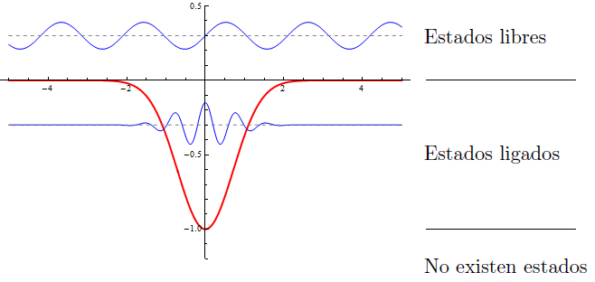

Introduzca en este campo la ecuación del potencial que desea resolver. Los símbolos para las operaciones permitidas son:
Suma: +
Resta: -
Multiplicación: *
División: /
Exponenciación: ^
Raíz cuadrada: Sqrt(argumento)
Exponenciación en base e: Exp(argumento)
Logaritmo en base e: Log(argumento)
Seno y coseno: Sin(argumento), Cos(argumento)
La ecuación del potencial puede ser cualquier expresión correctamente formada. El potencial admite el uso de parámetros, siempre y cuando estén formados por caracteres alfabéticos o guión bajo. El potencial también hace uso de parámetros reservados definidos en la configuración:
h: constante de Planck
m: masa de la partícula o masa reducida del sistema de partículas
m1, m2: masa de la primera y segunda partícula
La dimensión del potencial viene determinada por el uso de la variable 'x', unidimensional; o 'r' tridimensional. No es posible usar 'x' y 'r' conjuntamente en la ecuación.
El potencial introducido debe tener estados ligados para ser considerado válido. Los estados metaestables no se consideran ligados.
